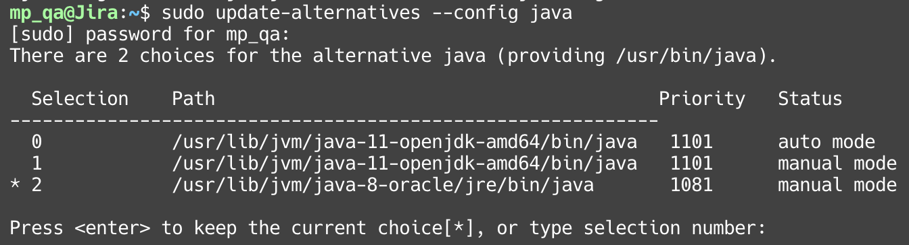
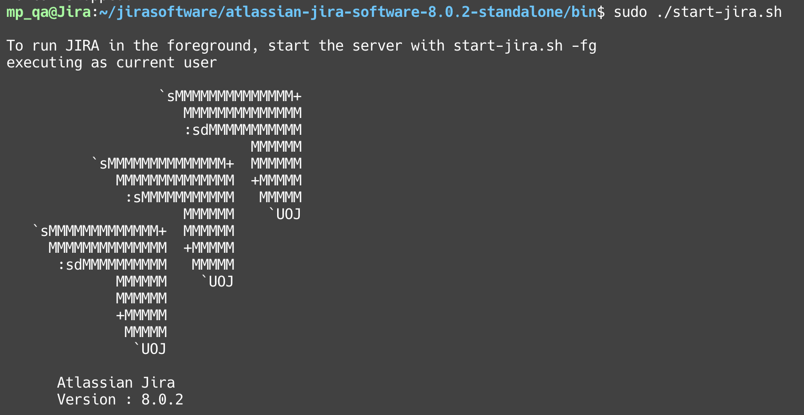

最近因為工作上的需要，主管想要一個可以完善的issue tracking平台，而主管就馬上跟我介紹JIRA，因為他也有使用的經驗。
而我在研究一陣子之後，發現JIRA的線上版非常不好用，插件也非常少，所以就決定轉戰本地版本(JIRA Server)。
但是在決定使用JIRA Server之後，在安裝的時候遇到了非常多的坑，這篇文章算是記錄起來，避免之後犯一樣的錯誤又要重查資料。
確認系統需求
- 作業系統
- Debian系列：Ubuntu Linux
- RedHat系列：CentOS Linux
- JAVA 8
- PostgreSQL 9.6 / MySQL 5.7 / Oracle 12c R1 / SQL Server 2016
安裝步驟(以Ubuntu為例)
安裝Java8
sudo add-apt-repository ppa:webupd8team/java |
由於 Oracle 的 Java 是屬於 Oracle 公司所有，它的授權方式不是一般的開放原始碼授權，安裝時會跳出類似這種授權條款訊息，必須選擇「Yes」同意授權條款才能安裝 Oracle 的 Java。
如果無法安裝，可以改為安裝OpenJRE
sudo apt-get install openjdk-8-jre
設定系統Java版本
sudo update-alternatives --config java |

選擇為
java8的編號，在這裡是==2==
設定JAVA_HOME環境變數
export JAVA_HOME="/usr/lib/jvm/java-8-oracle" |
確認是否有正確載入
env | grep JAVA_HOME |
應會顯示
/usr/lib/jvm/java-8-oracle
下載JIRA
wget https://www.atlassian.com/software/jira/downloads/binary/atlassian-jira-software-8.0.2.tar.gz |
這裡的8.0.2請自行替換版本，如果連結失效需至官網尋找連結
選擇安裝位置
mkdir <installation-directory> |
<installation-directory>請自行替換為自訂的名稱，這裡以jirasoftware來命名
解壓縮JIRA程式集
tar -xzf atlassian-jira-software-8.0.2.tar.gz -C <installation-directory> |
建立JIRA的檔案存放目錄
mkdir <home-directory> |
<home-directory>請自行替換為自訂的名稱，這裡以jirasoftware-home來命名
設定環境變數
cd <home-directory> |
確認是否有設定正確
env | grep JIRA_HOME |
應會顯示
/usr/(user)/\
安裝MySQL(適用於5.7.X)
下載並安裝MySQL Server
首先先安裝mysql-server
sudo apt-get install mysql-server |
檢查MySQL的版本，此教學是以5.7.X做的，其他版本請至JIRA官方觀看
sudo mysql --version |
接著，用管理者權限編輯/etc/mysql/my.cnf。
設定以下規則
[mysqld]
...
default-storage-engine=INNODB
character-set-server=utf8mb4
innodb_default_row_format=DYNAMIC
innodb_large_prefix=ON
innodb_file_format=Barracuda
innodb_log_file_size=2G
...假如有此行的話請刪除，確保sql_mode參數不是NO_AUTO_VALUE_ON_ZERO：
[mysqld]
…
sql_mode = NO_AUTO_VALUE_ON_ZERO
…
進入MySQL並建立名為JiraDB的資料庫
sudo mysql -u root -p |
正確建立後會顯示
Query OK, 1 row affected
接著確保用戶有連接數據庫的權限
適用於5.7.0~5.7.5
GRANT SELECT,INSERT,UPDATE,DELETE,CREATE,DROP,ALTER,INDEX on <JIRADB>.* TO '<USERNAME>'@'<JIRA_SERVER_HOSTNAME>' IDENTIFIED BY '<PASSWORD>';
flush privileges;適用於5.7.6以上的版本
GRANT SELECT,INSERT,UPDATE,DELETE,CREATE,DROP,REFERENCES,ALTER,INDEX on <JIRADB>.* TO '<USERNAME>'@'<JIRA_SERVER_HOSTNAME>' IDENTIFIED BY '<PASSWORD>';
flush privileges;
<JIRADB>請自行替換為自訂的名稱，這裡以JiraDB來命名<USERNAME>為有連接數據庫權限的JIRA使用者<JIRA_SERVER_HOSTNAME>為JIRA SERVER所在的ip位置<PASSWORD>為使用者的密碼
輸入exit即可離開mysql指令介面
以服務形式開啟SQL Serverservice mysqld start
下載MySQL JDBC驅動至JIRA library
下載JDBC Connector/J 5.1
如果連結失效的話請至這裡找
wget https://dev.mysql.com/get/Downloads/Connector-J/mysql-connector-java-5.1.47.tar.gz |
接著解壓縮並且移動到<Jira-installation-directory>/lib
tar -xzf mysql-connector-java-5.1.47.tar.gz |
執行JIRA
cd <installation-directory>/atlassian-jira-software-8.0.2-standalone/bin/ |

接著，JIRA就會作為背景服務執行了
在瀏覽器輸入http://(IP):8080/即可使用JIRA
關閉JIRA
輸入sudo ./stop-jira.sh即可